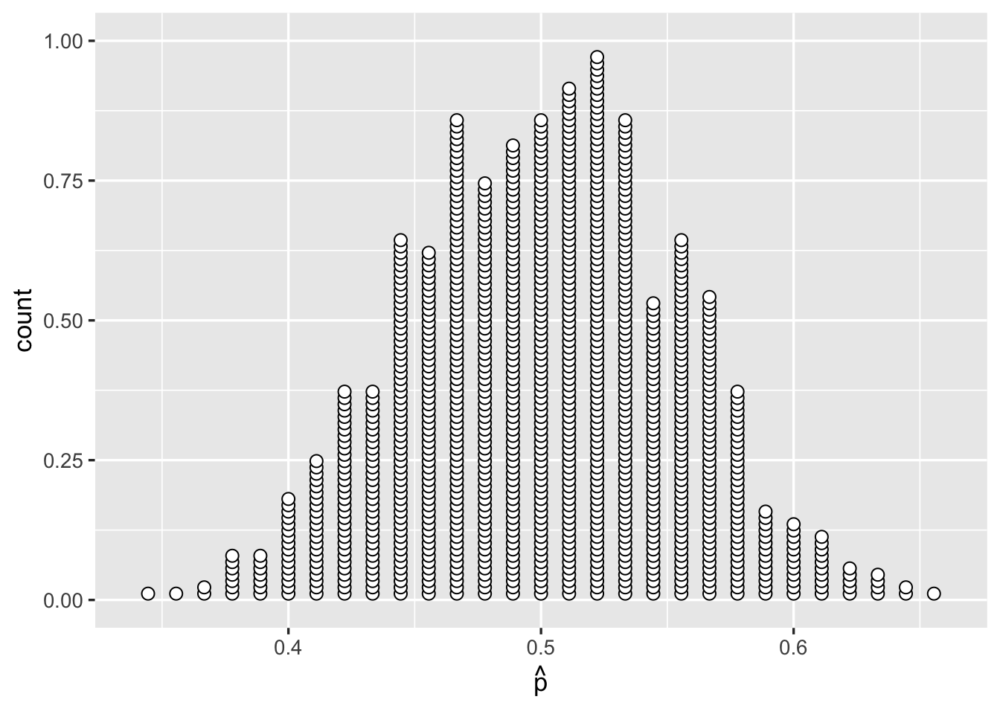

Chapter 1 Type I and Type II Errors, Power!
Instructions
- In this two-hour lab we will go through worked examples in the first hour, and you will attempt to answer some questions in the second hour.
- The Rmarkdown file for this week is here.
Learning outcomes
LO1. Recap hypothesis testing
LO2. Understand the different types of errors
LO3. Introduce statistical power
Reading
?????????????????????
1.1 Recap
- random chance
- alternative explanation
- statistical hypothesis HoHa!
- from random chance model, we constructed a null distribution.(lab involved bootstrapping the null)
- compare observed statistic to null distribution
- retrieved p-value (proportion of null distribution at least as extreme as observed)
- made a formal decision.
1.2 Walkthrough
Example 1: Coin toss
Research Question & Hypotheses
Is our coin biased?
Null hypothesis: We’re just as likely to get heads as tails when we flip the coin.
\[H_0: p_{heads} = 0.5\]
Alternative hypothesis: We’re more likely to see either heads or tails when we flip the coin.
\[H_1: p_{heads} \neq 0.5\]
Data collection
We toss the coin 90 times, and it lands on heads 54 times.
Analysis
Steps
- Calculate our statistic
- Generate the null distribution
- Calculate the probability of seeing our statistic (or one which is more extremely different the null) if the null were true (the p-value)
- Calculate our statistic, \(\hat{p}\)
## [1] 0.6111111- Generate the null distribution
Is our 54 of 90 coin tosses that surprising?
Let’s compare it against the null distribution.
Remember that the null distribution is what we would expect if the null hypothesis were true - it is how much the statistics computed from samples of size \(n\) would vary if the null is true. In our case, this quantifies how much our statistic (the proportion of heads) in a sample of size 90 would vary if the true probability of the coin landing on heads were 1/2.
# Specify our possible outcomes and their probabilities under the null
outcomes <- tibble(vals = factor(c('Heads', 'Tails')))
prob <- c(1/2, 1/2)
# generate samples under the null
samples <- rep_sample_n(outcomes, size = 90, replace = TRUE, reps = 1000, prob = prob)
# calculate the statistics for each sample to create the null distribution
null_distribution <- samples %>%
group_by(replicate) %>%
summarise(prop = sum(vals == 'Heads') / n())
# plot the null distribution
ggplot(null_distribution, aes(x = prop)) +
geom_dotplot(binwidth = 0.01, dotsize = 0.5, fill = 'white', stackratio = 0.5) +
labs(x = expr(hat(p)))
add the plot observed
ggplot(null_distribution, aes(x = prop, fill = (prop >= 0.61))) +
geom_dotplot(binwidth = 0.01, dotsize = 0.5, stackratio = 0.5) +
scale_fill_manual(values = c('white', 'tomato1')) +
geom_vline(xintercept = 0.61, color = 'tomato1', size = 1) +
labs(x = expr(hat(p)), fill = expr(hat(p) >= 0.61))
- Calculate our p-value
► Question
What is our p-value?
- The proportion of the null distribution which is \(\geq0.61\)
- The proportion of the null distribution which is \(\geq0.61\) or \(\leq0.39\)
- 2 times the proportion of the null distribution which is \(\geq0.61\) or \(\leq0.39\) (whichever is smallest)
► Solution
► Question
What is our formal decision about our coin?
- Not enough evidence to reject \(H_0\) (\(H_0:\) We’re just as likely to get heads as tails when we flip the coin.)
- Evidence in favour of \(H_1\) (\(H_1:\) We’re more likely to see either heads or tails when we flip the coin.)
► Solution
BUT have we made an mistake here?
is 55 out of 90 coin tosses that surprising?
convicting an innocent person
option… decrease alpha! div think - what are we doing here? we making the probability of convicting an innocent person much less likely casually - we’ve got to get some really strong evidence that they’re guilty.
1.2.1 Example 2: ??
on the other hand… research Q: is global temperature rising? H_o, temperature in y1 == temperature y2 H_a temperature in y1 != temperature y2 do a test, get a p-value <.01 with our new alpha of .001, we don’t reject H_o. But maybe we’re being to strict! Now we are letting a guilty person walk free!
1.2.2 Two different types of errors
| \(H_0\) is True | \(H_0\) is False | |
|---|---|---|
| Test doesn’t reject \(H_0\) | Correct | Type II Error |
| Test rejects \(H_0\) | Type I Error | Correct |
| Person is innocent | Person is guilty | |
|---|---|---|
| Verdict = Innocent | Correct | Let’s criminal walk |
| Verdict = Guilty | Wrongful conviction | Correct |
| \(H_0\) is True | \(H_0\) is False | |
|---|---|---|
| Test doesn’t reject \(H_0\) | Correct | Type II Error (\(\beta\)) |
| Test rejects \(H_0\) | Type I Error (\(\alpha\)) |
Correct |
1.2.2.1 Type I error.
if the null hypothesis is true, then the sampling variability of our statistic is the null distribution (plotted above), and we will reject (incorrectly) any sample statistic which results in a p-value which is \(\leq\) our \(\alpha\) level (e.g., the 0.05 we set earlier).
So the probability of making this error is equal the \(alpha\) level we set.
multiple tests!
the probability of making a type I error is the probability of getting an extreme sample statistic simply due to chance sampling variation. (i.e., we just happened to get a random sample with an extreme statistic).
thought experiment
there are 20 researchers.
each has a perfectly balanced/fair coin.
each one conducts a statistical test at \(\alpha = 0.05\) to evaluate whether their coin is fair.
how many of the researchers’ tests would we expect to result in a type I error?
Q what are our ideal values for alpha and beta? A 0 and 0. BUT, this isn’t possible when we sample